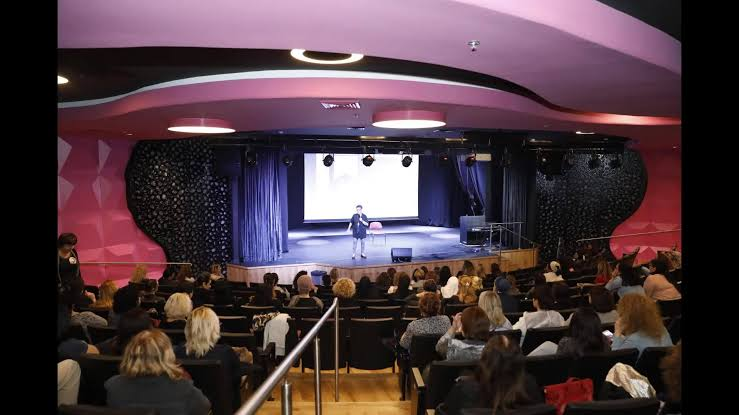
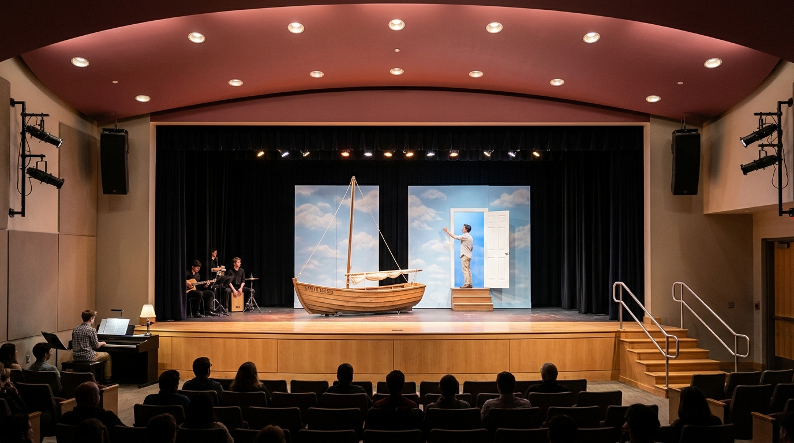
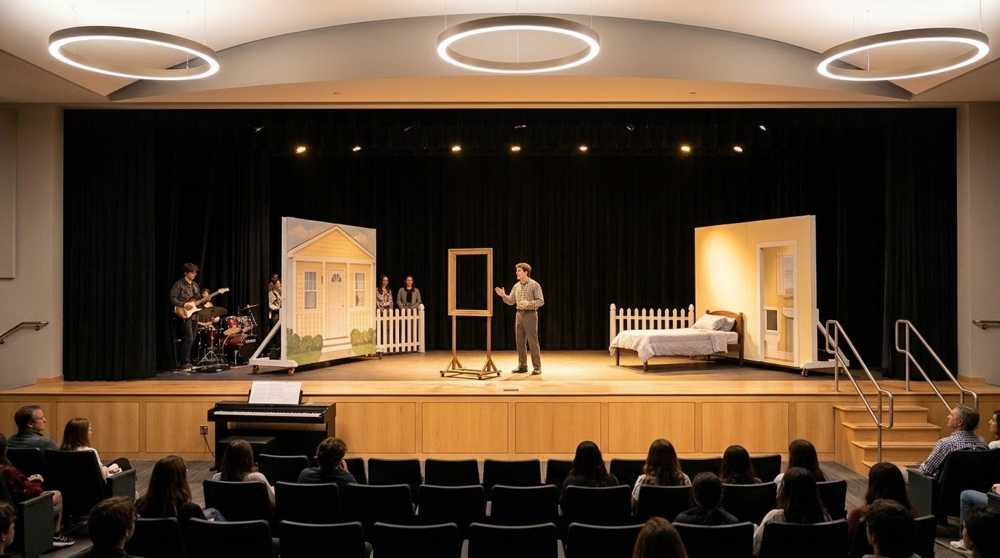

מפת האולם והבמה: סידור הלהקה והתפאורה
מבוסס בדיוק על צילום האולם שהעליתם וסקיצת היד שלכם.
שטח משחק פנוי ונקי 100%
קירות פסטל ניידים על גלגלים • סירת עץ קלה על גלגלים שקטים💡 לחצו על כל אזור בתרשים לקבלת הסבר מפורט
פסנתר בלבד על רצפת האולם משמאל
סידור מותאם לקהל קרובלמה זה הסידור המדויק לאולם שלכם?
- הקהל קרוב מדי לחזית הבמה: בתמונה רואים בבירור שהשורה הראשונה יושבת מטר וחצי בלבד מהבמה. אין שום מקום ללהקה שלמה על הרצפה.
- הפסנתר/קלידים: יושב בפינה השמאלית הקיצונית על הרצפה צמוד לדופן הבמה, מחוץ לשורת המעבר.
- הגיטרות והתופים (או קחון): יושבים בתוך כנף הבמה השמאלית מאחורי קו הוילון השחור. הם מחוברים למערכת ההגברה (PA) של האולם, רואים את השחקנים ולא תופסים מקום על הבמה או על הרצפה.
- המדרגות בימין נשארות פנויות: המעבר של המדרגות עם מעקה המתכת נשאר חופשי לחלוטין לשחקנים שיורדים לקהל.
השוואה: הסקיצה המקורית ⬅️ צילום האולם בפועל ⬅️ הדמיית המופע באולם



הדמיות התפאורה המותאמות לאולם האמיתי
הדמיות ריאליסטיות המבוססות 1:1 על צילום האולם שהעליתם. לחצו על כל תמונה להגדלה מלאה.
סצנת הסיום (סנטה מריה ודלת השמיים)
הסירה עשויה עץ קל על גלגלים במרכז הבמה. ברקע על הוילון השחור: פנל שמיים עדין עם דלת לבנה פשוטה ומדרגות עץ. המדרגות מימין נשארות פנויות לחלוטין.

חדר השינה והמראהתמונה 1: חדר השינה והמראה מול הקהל
מסגרת מראה פשוטה מעץ על מעמד (ללא זכוכית), מיטה מעץ וקיר פסטל צהוב קל על גלגלים. טרומן מצחצח שיניים ומביט ישירות אל שורות הקהל הקרובות.
תמונת האולם המקורית מגוגל
הבמה עליה תופיעו: תקרה מעוגלת עם גופי תאורה מעגליים, וילונות שחורים, מדרגות ירידה עם מעקה מימין, והשורה הראשונה של הקהל קרובה מאוד לבמה.
מדריך בנייה מעשי (תקציב שפוי ובנייה אפשרית לנוער)
פתרונות פרקטיים שנוער בי״ב באמת יכול לבנות בסדנה או בחצר בית הספר עם עץ, צבע וגלגלים מטמבור.
1. סירת המפרש "סנטה מריה" על גלגלים
חומרים ואיך בונים:
- בסיס: פלטת עץ סנדוויץ' 17 מ"מ (גודל כ-1.50 על 0.80 מ') עם 4 גלגלי סיליקון שקטים עם מעצור מטמבור (15-20 ש"ח לגלגל).
- דפנות: לוח דיקט דק 4 מ"מ מכופף ומחובר בברגים למסגרת עץ 5x2.5 ס"מ, צבוע בלבן עם הכיתוב "Santa Maria".
- תורן: מוט עץ של מטאטא מחובר עם זוויות מתכת לבסיס + חבלים ובד מפרש לבן פשוט.
- יציבות ובטיחות: טרומן יכול לעמוד בבטחה בתוך הסירה ולהחזיק בתורן כשהסירה מתגלגלת חלק על רצפת הבמה!
2. משקוף דלת השמיים ומדרגות עץ
חומרים ואיך בונים:
- משקוף: מסגרת עץ מלוחות 5x10 ס"מ (גובה 1.90 מ', רוחב 75 ס"מ) עם שתי רגליים אחוריות משולשות (Kickstands) עם משקולות כדי שלא יזוז.
- הדלת: לוח עץ לבוד (דיקט 8 מ"מ) צבוע בלבן עם ידית פשוטה וצירי מתכת זולים.
- חיבור לרקע: מעמידים את המשקוף צמוד לוילון השחור של האולם. כשטרומן פותח את הדלת – מאחוריה יש חושך אמיתי!
- מדרגות: שרפרף עץ פשוט של כיתה או 2 קוביות עץ יציבות שטרומן דורך עליהן בביטחון.
3. שני קירות מודולריים ניידים על גלגלים
חומרים ואיך בונים:
- שני פנלים קלים: מסגרת עץ 5x2.5 ס"מ (רוחב 1.20 מ', גובה 2.0 מ') עם לוח מזונית/דיקט דק.
- בסיס: רגלי עץ בצורת T הפוך עם גלגלים בתחתית.
- צד א׳: צבוע בפסטל צהוב עם חלון מצויר וגדר לבנה קטנה (הבית בסיהייבן).
- צד ב׳: צבוע בגוון אפור/בז' משרדי (סוכנות נסיעות / משרד).
- סיבוב של 180 מעלות משנה סצנה ב-3 שניות בלי לסחוב קירות כבדים.
4. מעמד מסגרת מראה ללא זכוכית
חומרים ואיך בונים:
- מסגרת תמונה מלבנית מעץ (כ-60x80 ס"מ) ללא שום זכוכית.
- מחוברת לעמוד עץ אנכי עם בסיס רגליים יציב בגובה 1.50 מ'.
- טרומן עומד מאחוריה ומצחצח שיניים – הקהל באולם הוא ההשתקפות שלו!
- שוקלת פחות מ-3 ק"ג – שחקן מרים ביד אחת ומפנה לכנף ברגע.
5. גלי הים של הסערה (בד סאטן כחול)
חומרים ואיך מפעילים:
- קונים בחנות בדים 5 מטר בד סאטן או אורגנזה כחול מבריק (15-20 ש"ח למטר).
- משחילים מקל עץ בכל אחד משני הקצוות כדי שיהיה נוח לאחוז.
- שני שחקנים עומדים בכנפי הבמה ומניעים את הבד בעוצמה מעל חרטום הסירה בזמן הסערה.
- בסיום: הבד נאסף לתוך סלסלה בכנף שמאל בתוך שנייה אחת.
6. נפילת הפנס מהשמיים (תמונה 1)
איך מפעילים בבטחה:
- משתמשים בגוף פנס ישן או קופסה שחורה קלה של פנס לד.
- משחילים חבל ניילון דק דרך גלגלת על גשר התאורה בתקרה מעל הבמה.
- החבל מגיע לכנף ימין. איש צוות משחרר את החבל בפתאומיות – הפנס נופל מטר וחצי ונבלם בעזרת מעצור חבל כ-20 ס"מ מעל הרצפה.
- מתופף הלהקה נותן מכת מצילה חדה בול ברגע הנפילה!
סצנוגרפיה ומעברי במה לפי 14 תמונות המחזה
מעברים פשוטים ומהירים המותאמים לבמת האולם שלכם.
הבוקר של טרומן, המראה ונפילת הפנס
🔨 תפאורה נדרשת
- מיטה: מסגרת עץ פשוטה עם מזרן.
- מראה: מעמד מסגרת עץ פתוחה ללא זכוכית.
- פנס נופל: פנס קל על חבל וגלגלת מהתקרה.
🚪 מעבר במה
מריל מעירה את טרומן. ברגע שטרומן יוצא אל הרחוב, שני תלמידים מפנים את המיטה והמסגרת לכנף ימין תוך 4 שניות.
🎶 הלהקה
פסנתר על הרצפה משמאל מנגן נעימת בוקר שמחה. ברגע נפילת הפנס: מכת תופים חדה מהכנף ודממה פתאומית!
משרד הביטוח ומזח המעבורת להארבור איילנד
🔨 תפאורה נדרשת
- משרד: שולחן עץ קל מתקפל, טלפון ישן וקלסר.
- שלט מעבורת: שלט עץ קטן "מעבורת להארבור איילנד".
🚪 מעבר במה
טרומן מסיים את סצנת המשרד וצועד אל קדמת הבמה ליד המדרגות הימניות. הוא מביט אל האולם החשוך שמייצג את המים הפתוחים.
🎶 הלהקה
גיטרה מהכנף מנגנת מקצב קופצני, המתחלף בצלילי פעמונים בקלידים כשנזכר בטביעת אביו.
השיחה עם מרלון על הגשר הלא-גמור בלילה
🔨 תפאורה נדרשת
- מינימליזם: שרפרף עץ או 2 ארגזים הפוכים שעליהם יושבים.
- שישיית פחיות בירה וכדור.
🚪 מעבר במה
כל הבמה חשוכה לחלוטין. רק ספוט אחד חם מאיר עליהם במרכז הבמה.
🎶 הלהקה
נגינת פסנתר עדינה ומלנכולית של הנגן על הרצפה משמאל, שקטה ואינטימית מאוד.
הסערה בים בסירה "סנטה מריה" ודלת היציאה
🔨 תפאורה נדרשת
- סירת עץ על גלגלים: נכנסת ממעבר ימין למרכז הבמה.
- בד כחול: שני תלמידים מנערים את הגלים משני הצדדים.
- משקוף דלת לבנה: צמוד לוילון השחור מאחור עם 2 מדרגות עץ.
🚪 המהלך הדרמטי
טרומן מפליג בסירה. הסירה פוגעת ברקע, טרומן יורד, עולה במדרגות העץ, פותח את הדלת הלבנה ויוצא אל החושך שמאחורי הוילון!
🎶 הלהקה
תופים וגיטרות מהכנף בסערה רועמת! בסיום: שקט מוחלט וסולו פסנתר נוגע ללב בנאום הפרידה ("בוקר טוב, צהריים טובים ולילה טוב!").
צ'ק-ליסט רקוויזיטים, רכש והכנה
רשימת האביזרים מהמחזה עם דגשי בנייה ורכש מעשיים.
| V | פריט / רקוויזיט | תמונה במחזה | דגשי בנייה / רכש | סטטוס |
|---|